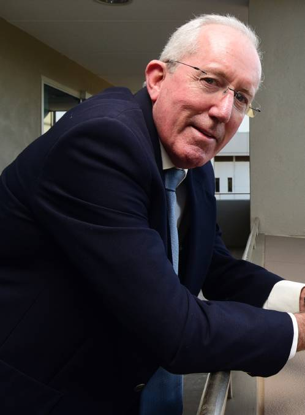

About
Michael Kneipp
Michael is a highly capable senior manager with over three decades of practice in government and private consultancy in a range of situations including public administration, agriculture, natural resource management, small and medium enterprises, transport and corrective services. As Administrator for Dubbo Regional Council Michael oversaw the integration of two very diverse entities in a very challenging environment.
He is also a skilled facilitator and keynote speaker, having delivered AusAID Leadership Programs in Bougainville and Solomon Islands.